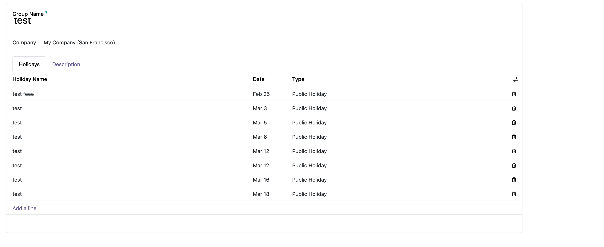
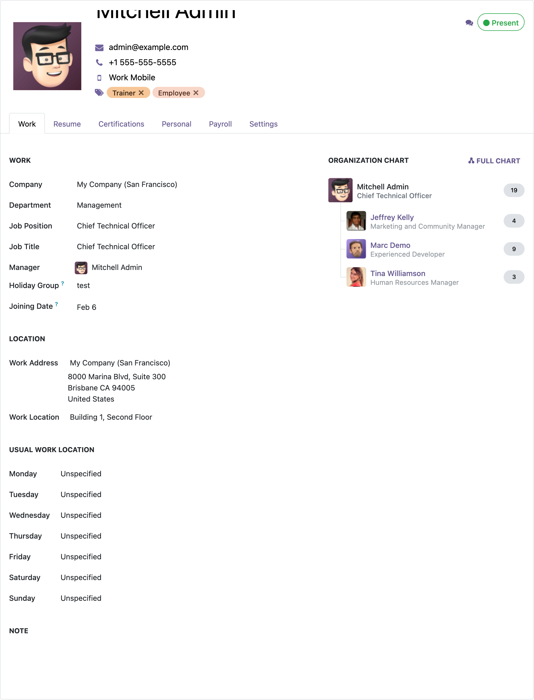

Free Lifetime Support
We are committed to your success! Our support team will assist you with any doubts, questions, or bug fixes related to the module for as long as you use it. (Data recovery excluded.)
Email: dev.odoomatrix@gmail.com
Employee Attendance Dashboard
A modern, glassmorphism-styled attendance dashboard for employees. Track daily work hours, view attendance calendars, monitor KPIs, manage holidays, and celebrate team milestones — all in one beautiful interface.
Why Choose This Module?
📅
Interactive Calendar
Monthly calendar with color-coded attendance, hours display, and holiday labels.
📈
Real-Time KPIs
Live check-in/out times, today's hours, working days count, and absence tracking.
🎉
Celebrations
Automatic birthday and work anniversary tracking for the entire team.
🕔
Work Schedule Aware
Respects each employee's configured work hours, including 2-week alternating schedules.
Features
✅ Real-Time KPI Cards
Five glassmorphism-styled KPI cards displayed at the top of the dashboard, giving employees an instant overview of their attendance status:
- Today's Status — Present, Absent, Day Off, or Holiday badge
- Check In Time — First check-in time of the day
- Check Out Time — Latest check-out (shows --:-- when currently checked in)
- Today's Hours — Live worked hours vs expected hours
- Working Days — Days present out of scheduled working days this month
📅 Interactive Attendance Calendar
A full monthly calendar view that shows each day's attendance at a glance:
- Color-coded days — Green for full hours, orange for low hours, red for absent
- Hours display — Worked hours shown directly on each calendar day
- Holiday labels — Public holidays displayed on the calendar
- Off day marking — Non-working days clearly indicated based on employee schedule
- Month navigation — Navigate between months to view historical attendance
- Today highlight — Current day highlighted in yellow with a pulsing glow animation
- Joining date awareness — Days before the employee's joining date are faded and excluded from attendance tracking
🕔 Work Schedule Integration
Fully respects the employee's configured Work Hours (resource calendar) in Odoo:
- Custom work days — Correctly identifies working vs non-working days based on the employee's schedule
- Expected hours — Shows expected hours per day from the schedule configuration
- 2-week alternating schedules — Full support for resource calendars with
two_weeks_calendar mode
- Break filtering — Lunch/break periods are excluded from expected hours calculation
🎊 Holiday Management
Manage company and public holidays with a dedicated holiday group system:
- Holiday groups — Create holiday groups and assign them to employees
- Holiday types — Support for Public, Company, Optional, and Restricted holidays
- Upcoming holidays sidebar — Scrollable table showing upcoming holidays with type badges
- Calendar integration — Holidays displayed directly on the attendance calendar
- Public holiday handling — Public holidays excluded from absent day calculations
- Security group — Holiday management restricted to users with the Manage Employee Holidays privilege

Holiday Group form showing holidays list with name, date, and type
🎂 Team Celebrations
Never miss a team member's special day:
- Upcoming birthdays — Shows birthdays in the next 30 days with employee avatar
- Work anniversaries — Tracks work anniversaries with years of service count
- Avatar display — Employee photos shown alongside celebration entries
- Type badges — Color-coded Birthday and Anniversary badges
🎨 Modern Glassmorphism UI
A visually stunning dashboard built with modern design principles:
- Glassmorphism design — Frosted glass cards with backdrop blur effects
- Animated gradient background — Subtle drifting gradient mesh background
- Smooth animations — Hover effects, pulsing today highlight, and loading spinners
- Responsive layout — Works on desktop, tablet, and mobile screens
- Indigo/Purple color scheme — Professional color palette with gradient accents
- Sticky sidebar — Holidays and celebrations stay visible while scrolling
🌐 Timezone Aware
All times are displayed in the employee's local timezone, following Odoo's fallback chain:
- Employee's resource calendar timezone
- Employee's own timezone setting
- User's timezone preference
- Company's resource calendar timezone
- UTC as final fallback
🔒 Security & Access Control
Fine-grained access control for holiday management using Odoo's built-in user privilege system:
- Manage Employee Holidays — A dedicated privilege that appears in Settings → Users → User form under the HR section
- Holiday menus restricted — Only users with the privilege can see and access Holiday Groups and Holidays menus under Employees → Configuration
- Read-only for regular users — All employees can view holiday data on the dashboard, but only privileged users can create, edit, or delete holiday groups and holidays
- Employee form fields — The Holiday Group and Joining Date fields on the employee form are only editable by users with the privilege

Employee form showing Holiday Group and Joining Date fields under the Work tab
⚙ Configuration
1
Install the Module
Install Employee Dashboard from the Apps menu. This will automatically install hr_attendance if not already present.
2
Set Work Hours on Employees
Go to Employees → Employee and set the Work Hours (Working Schedule) field. The dashboard uses this to calculate expected hours and working days.
3
Create Holiday Groups (Optional)
Navigate to Employees → Configuration → Holiday Groups to create groups, add holidays, and assign employees. Requires the Manage Employee Holidays privilege (configurable under Settings → Users).
4
Set Joining Date (Optional)
Set the Joining Date field on employees. This controls when attendance tracking begins — days before the joining date are faded on the calendar and excluded from KPI calculations. Also enables work anniversary tracking in the celebrations sidebar.
5
Open the Dashboard
Click Employee Dashboard from the main menu. Each logged-in user sees their own attendance data automatically.